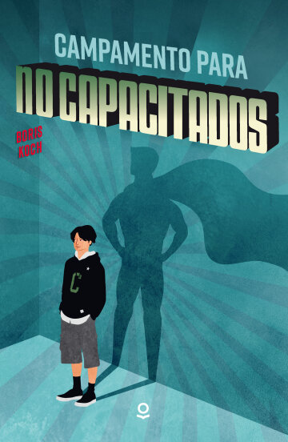
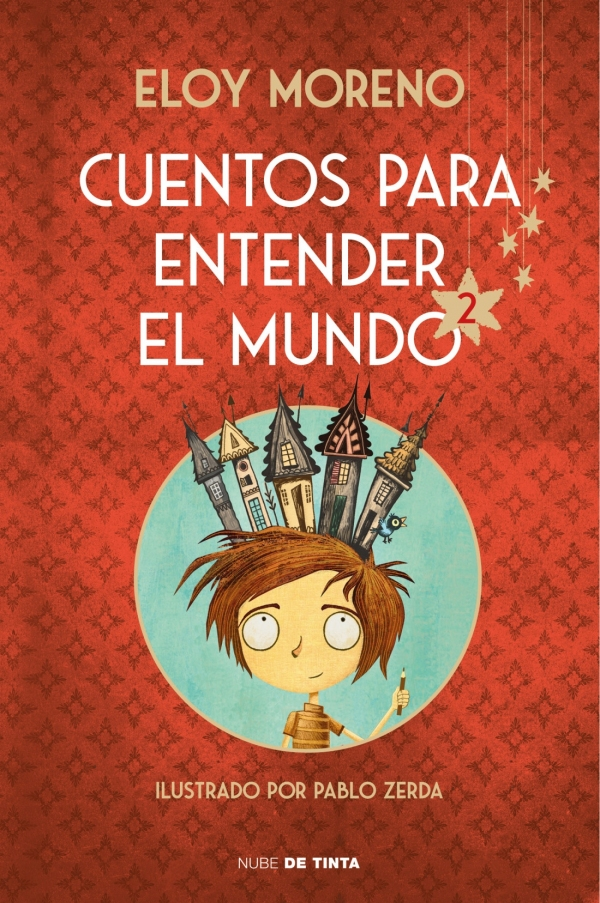
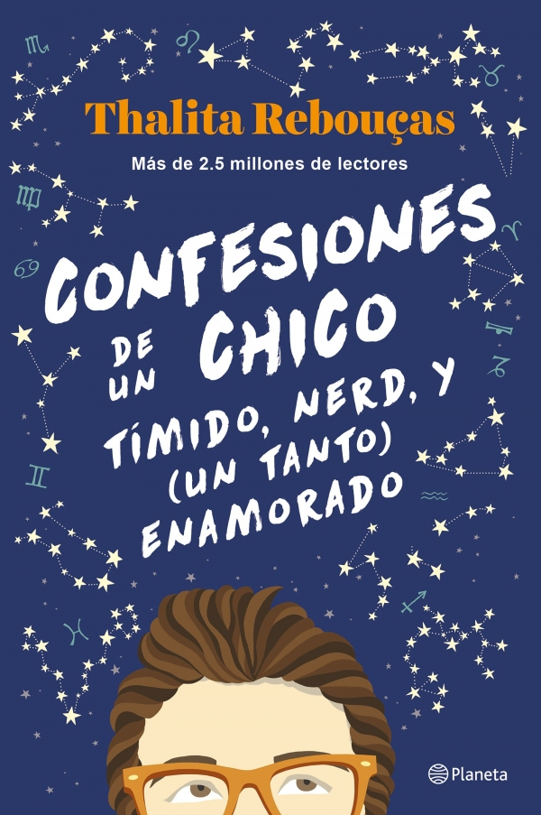
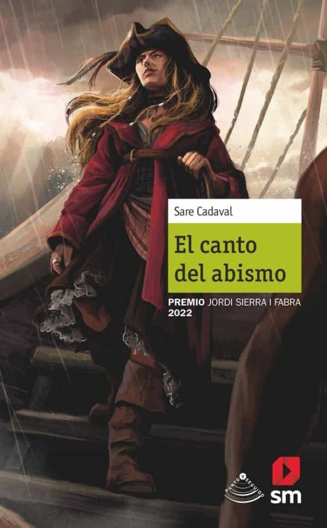
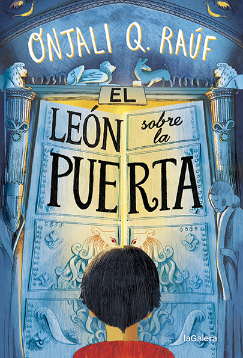
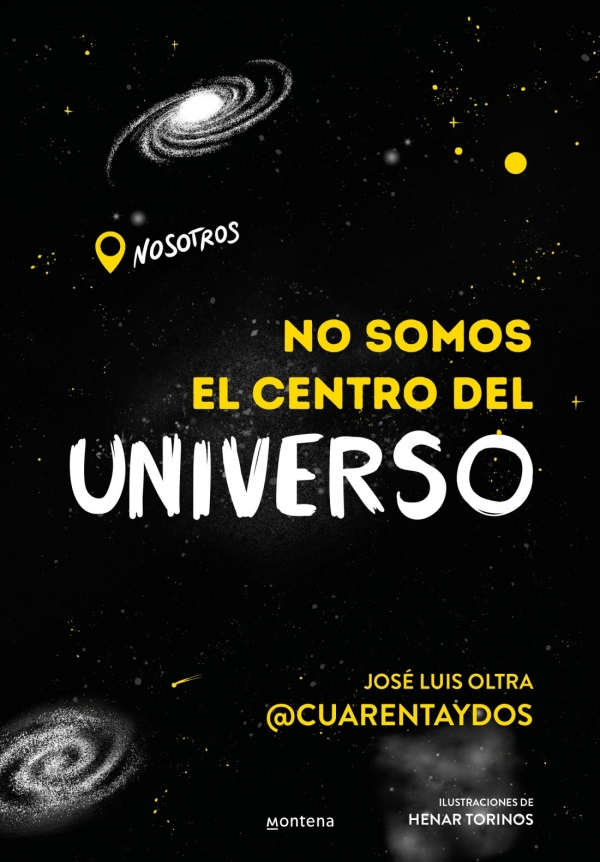

Novedades

Campamento para no capacitados
Boris Koch
Loqueleo
Diecisiete metros y cuarenta y dos centímetros… A esa altura se encuentra el puente desde el que Bjarne y Luca, su mejor amigo, saltaron. No era una buena idea, pero Bjarne quería volar a toda costa para que en él se desarrollase una capacidad sobrenatural. No había normas establecidas para alcanzar la capacidad de volar, la de hacerse invisible o la de encender una llamita en la yema del pulgar; pero Bjarne estaba dispuesto a arriesgar lo que fuera para conseguir su objetivo. Sin embargo, las cosas no salen como planeaba y mientras su amigo termina viviendo en el mundo de los superhéroes, Bjarne va a parar a un campamento de verano para no capacitados. ¡Y allí empiezan todos los problemas!

Cuentos para entender el mundo II
Eloy Moreno
Nube de Tinta
«Durante estos años los lectores me habéis dado tanto que me sentía en deuda con vosotros. Por eso he decidido yo también entregaros una parte de mí. Estos textos que os traigo han modelado de alguna manera mi forma de ser. Son pequeños cuentos, ya casi perdidos, de grandes autores que he decidido adaptar a los tiempos que corren. He modificado personajes, situaciones, el lenguaje... pero la esencia sigue siendo la misma: esa que nos ayuda a entender el mundo.»

Confesiones de un chico tímido, nerd y (un tanto) enamorado (Confesiones II)
Thalita Rebouças
Planeta
Davi está en su segundo año de instituto y finalmente se ha animado a apuntarse al curso de astrología que siempre quiso hacer. Entre signos del zodíaco y cartas astrales, conoce a Milena, una chica que lo deja totalmente enamorado y por la que se esforzará en superar su timidez. Además, Davi está preocupado por su amigo Zeca: su novio ha roto con él y necesita el apoyo incondicional de sus amigos. Con tanta conmoción, Davi no sabe por dónde empezar. Por si fuera poco, una compañera del instituto le presentará a Gonçalo, que ha venido a pasar sus vacaciones a Río. Su llegada tedrá efectos inesperados en Davi, que se enfrentará a emociones muy nuevas.

El canto del abismo
Sare Cadaval Fleming
SM
La vida de Selena da un giro inesperado cuando recibe una carta del rey de Thanglia convocándola a una reunión secreta. El monarca le hace una propuesta: atravesar el Abismo a cambio de importantes ganancias. Aceptar el trato podría suponer su muerte y la de su tripulación, pero la joven Capitán está dispuesta a arriesgar sus vidas con tal de demostrar que no le teme a nada.

El león sobre la puerta
Onjali Q. Raúf
La Galera
Una nueva e increíble historia, narrada con humor y sensibilidad, de Onjali Q. Raúf, la premiada autora del best seller El chico de la última fila. Desde que tengo uso de la razón, la gente siempre se nos ha quedado mirando, a mi familia y a mí. Mi padre dice que es porque somos «especiales». Nunca hay nadie que se parezca a nosotros, o a mi amiga Sangeeta, en mis libros de historia del colegio. Sin embargo, este año es diferente. Porque en una excusión escolar para estudiar la Segunda Guerra Mundial, he visto mi nombre esculpido encima de una de las puertas de la iglesia, bajo un león dorado. Todavía no sé quién fue esta persona que compartía mi nombre, pero lo que sí que sé es que fue un héroe. Y eso lo cambia todo. De hecho, es posible que, con mi ayuda, sea capaz de cambiar la historia. El león sobre la puerta pone el foco en los testimonios que nuestros libros de historia han olvidado, y en el poder de la amistad a través de las generaciones.

No somos el centro del universo
José Luis Oltra
Montena
Desde la existencia del propio mundo los avances y descubrimientos científicos han sido el motor del progreso de la humanidad. Pero nuestras creencias no han sido siempre las mismas y hoy en día sigue habiendo un montón de dudas que nos asaltan: ¿acaso somos tan especiales como nos creemos?, ¿se puede apagar el Sol? ¿abandonaremos algún día la Tierra?, ¿es posible habitar otros planetas?, ¿hay vida inteligente ahí fuera?, ¿qué es eso de la materia oscura? Un recorrido desternillante por la historia del universo para entender de dónde venimos, pero, sobre todo, a dónde vamos.